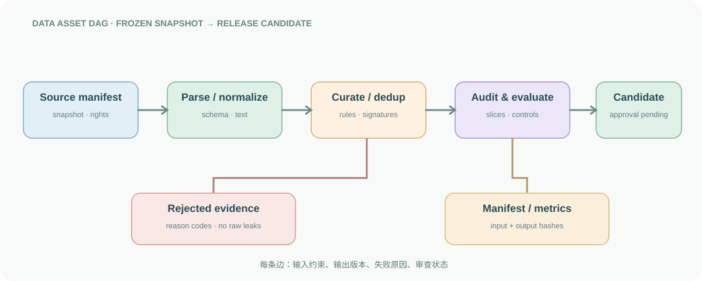
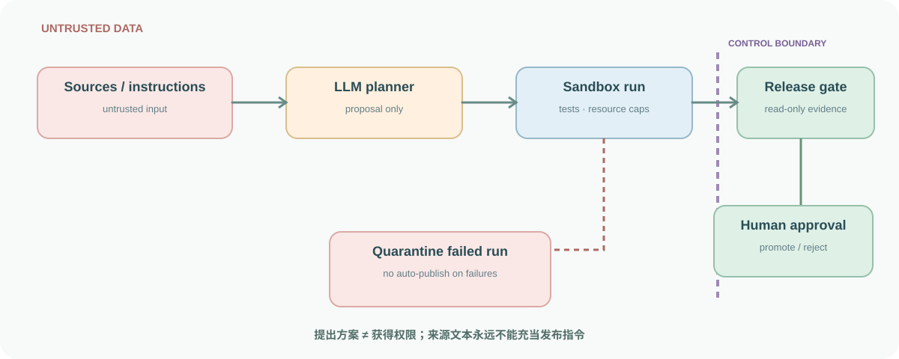
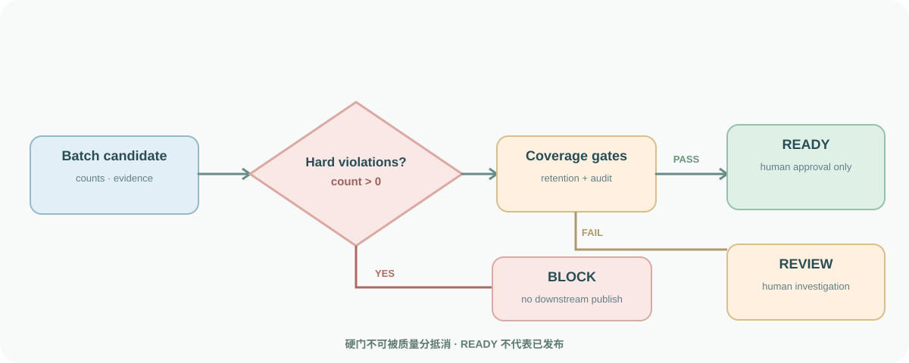

MODULE 26 / LLM DATA ENGINEERING
自动化数据准备系统
把 Operator、DAG、Agent 规划、资产质量门与版本发布组合成可审计的数据生产系统，明确自动化的能力边界与审批责任。
如果每天涌入数万份新文档，人工编辑每条过滤规则会成为瓶颈。但“Agent 自动规划数据流水线”不等于“Agent 自动发布训练数据”。可靠系统必须让规划、执行、证据与授权分离：模型可以提出候选配置，确定性检查与审查者才能决定是否晋级。
从脚本到可治理的数据产品
传统的单机脚本能完成一次清洗，却常缺乏明确的输入合同、数据快照和恢复边界。将几十个操作符放进一个长 Python 文件并不自动构成生产系统：只要上游解析器升级、许可变更或某个 task 重试，就可能产生不可解释的不同输出。

把一次数据运行表示为 Run = (input snapshot, operator graph, code, config, model revisions, environment)。每个节点都公开输入 schema、输出 schema、指标、失败类型和可重试策略。数据流的关键并非使用了哪个编排产品，而是任何输出能沿着边追溯到确定的上游版本。
| 层次 | 责任 | 不应承担的责任 |
|---|---|---|
| Operator | 清洗、打标、规范化、去重等单一变换 | 自行决定权限、覆写不可变历史 |
| Orchestrator | 调度、依赖、checkpoint、重试与指标汇总 | 根据“任务完成”推断数据质量已合格 |
| Evaluator | 在冻结的样本框上比较质量、覆盖与效用 | 只用单个准确率替代治理与误差审计 |
| Agent planner | 提出 DAG、配置、测试和故障定位候选 | 绕过审查直接运行特权命令或发布 |
| Release controller | 审查证据、批准候选、标记版本、回滚 | 让自动文本评分覆盖许可与隐私硬门 |
Apache Airflow 动态任务映射把下游 task 的数量延后到上游结果可用时再生成。Dagster 的 Asset Checks则把某项资产的验证与物化结果联系起来。它们提供的是可组合的调度与质量接口，并不自带完整的语料许可审查。
Agent 能做什么：计划在沙箱里，晋级在控制面

DataFlow研究将可复用 operator、pipeline 与 DataFlow-Agent 结合，以自然语言需求合成和验证候选工作流；Data-Juicer提供面向基础模型数据的可配置操作符和处理框架。它们是不同的软件项目，不等于旧版文章声称的、缺乏可定位出处的“DataEvolver 自动搜索系统”。
- 解析需求：把“清理中文技术文档”拆成语言、来源、许可、质量与保留率等可检查条件。
- 约束搜索空间：只准使用版本固定的算子及参数 schema；新的生成代码先经过静态分析、单元测试与沙箱。
- 离线候选实验：对同一个冻结快照运行基线与候选，记录抽样框、运行日志、资源和差异。
- 失败归因：判断是 schema、配额、模型服务、数据偏移，还是不可重试的治理失败。
- 审查晋级：人工或独立授权控制面审阅证据；生成 Agent 自己不拥有生产发布凭据。
让 DAG 中每个算子拥有可验证合同
{
"operator": "language_filter",
"version": "lang-filter-v4",
"input": "raw-text@sha256:...",
"output_schema": "document-v3",
"params": {"target_language": "zh", "threshold": "calibrated-on-audit-v2"},
"resources": {"cpu": 4, "memory_gb": 8},
"quality_checks": ["language_slice_recall", "output_nonempty"],
"on_failure": "quarantine_and_stop",
"output_manifest": "manifest@sha256:..."
}这个 JSON 是教学数据合同，不是 Airflow 或 Dagster 的原生配置。threshold 是一项需要标注的实验设置，不是从某篇论文继承来的通用“最佳阈值”。快照和输出指纹与第 17 章的可复现性契约直接连接；task 分片和重复执行与第 23 章的 DataTrove 执行器有关。
重试要分清三种失败：瞬态（网络超时，可有限退避重试）、确定性（schema 错误，应停止并修复配置）、治理性（来源未获批准或发现隐私风险，必须阻止晋级）。只看任务 exit code 为零不足以判断是否能发布。
决策门：拒绝质量分掩盖治理风险

对数据量 与保留量 ，保留率：
阈值在下方只作为可调教学值：存在硬治理违规则 BLOCK；不存在硬门违规但保留率或抽检覆盖不足则 REVIEW；均满足也只能 READY_FOR_HUMAN_APPROVAL。真实项目需要分层抽样、误杀率、风险等级及审批权限，而不只是两个百分比。
from scripts.automation_gate import evaluate_batch
decision = evaluate_batch(
input_docs=1000, accepted_docs=800,
audited_docs=120, hard_violations=0,
min_retention=0.50, min_audit_fraction=0.10,
)
print(decision.status) # READY_FOR_HUMAN_APPROVAL从一次成功到持续可追责
每次运行至少应记录：上游 manifest SHA、operator digest、代码 commit、输入/输出记录数、每层过滤原因、成本与耗时、错误预算、抽检框、输出 checksum、批准人和可逆的发布指针。发生质量退化时只回滚发布指针，不覆写历史资产；需要删除不合规数据时，保留受限审计记录并遵守删除策略。
如需搜索最佳规则，应该先定义冻结评估协议，对多组候选做同预算消融、重复抽检和下游训练比较；不能让 Agent 在每次实验后反复修改评测集，直到“找到更高分”。持续评测还应独立监控回归集、长尾来源和隐私状态。
参考资料
- DataFlow: An LLM-Driven Framework for Unified Data Preparation and Workflow Automation in the Era of Data-Centric AI，2025，Operator/Pipeline/Agent 的研究设计。
- DataFlow 官方仓库：算子、数据准备工作流和 Agent 实现。
- Data-Juicer 官方仓库：可组合数据处理操作符与分布式处理。
- Apache Airflow：Dynamic Task Mapping：运行时映射 task 的语义。
- Dagster：Asset Checks：数据资产层面的检查与验证。
- Datasheets for Datasets：数据来源、处理与使用目的的文档化。